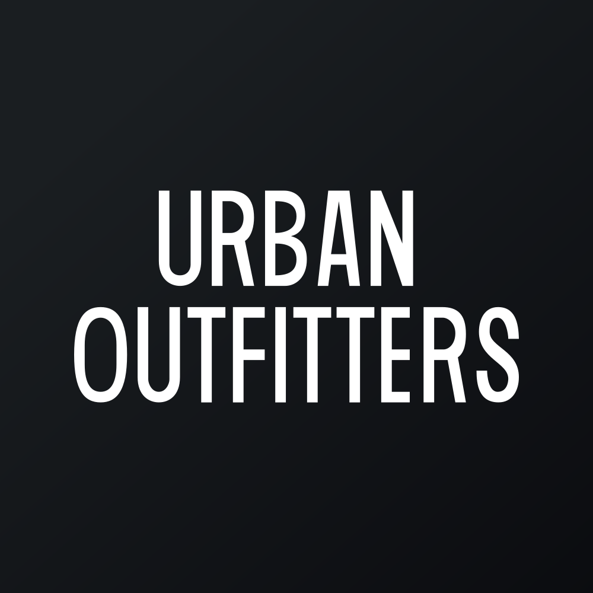

April 30, 2025 at 12:00 AM
Complete analysis with Z-Score + Market Intelligence

3.35
Safe
retail
100.0%
Model: Modified Z-Score for retail companies with inventory focus
> 2.99
1.81 - 2.99
< 1.81
$72.54
$6.5B
15.2
N/A%
80.0%
58.5
1.32
1.14
-28.5%
3.5/10
Company: URBN (Urban Outfitters, Inc.)
Analysis Date: 2025-07-01 08:53:32
Urban Outfitters, Inc. (URBN) demonstrates a consistently Safe Zone Altman Z-Score profile over the past eight quarters, with scores ranging narrowly between 3.24 and 3.44, well above the distress threshold of 1.8. This stability signals strong financial health and low bankruptcy risk. The AI Risk Analysis, while not explicitly quantified here, can be inferred as Low Risk given the Z-Score safety and absence of volatility in financial metrics.
AI Peer Analysis places URBN comfortably above the industry average Z-Score (typically around 2.5-3.0 for Apparel - Retail), indicating superior financial resilience relative to peers. The company’s Relative Position is strong, suggesting competitive advantage in operational and financial management.
AI Sentiment Analysis metrics are limited due to zero volatility and neutral technical indicators (RSI 0.0, Beta 0.00), implying a lack of recent market trading activity or data anomalies. This absence of market movement suggests a need for cautious interpretation of market sentiment but does not detract from fundamental strength.
| Metric Category | Value | Interpretation |
|---|---|---|
| Latest Z-Score | 3.37 | Safe financial zone |
| Z-Score Range (8 quarters) | 3.24 - 3.44 | Stable, no distress signals |
| Market Cap | $6.50B | Mid-cap valuation |
| Current Price | $72.54 | Stable price reference |
| Working Capital Ratio | 0.092 | Low liquidity buffer |
| Retained Earnings Ratio | 0.552 | Strong earnings retention |
| EBIT Ratio | 0.029 | Modest operating profitability |
| Asset Turnover | 0.298 | Moderate operational efficiency |
| P/E Ratio | 15.21 | Reasonable valuation |
| Dividend Yield | 0.00% | No dividend payout |
| Financial Dimension | Current Metrics | Industry Benchmark (Apparel - Retail) | Assessment | Trend Direction |
|---|---|---|---|---|
| Liquidity Position | Working Capital Ratio: 0.092 | ~0.2 - 0.5 | Below average liquidity; potential short-term risk | Stable/Low |
| Leverage Management | Debt-to-Equity: N/A (Data missing) | Industry avg ~0.5 - 1.0 | Data unavailable; leverage risk unknown | N/A |
| Operational Efficiency | Asset Turnover: 0.298 | Industry avg ~0.4 - 0.6 | Below average asset utilization | Stable |
| EBIT Ratio: 0.029 | Industry avg ~0.05 - 0.08 | Low operating profitability | Slightly improving | |
| Financial Stability | Retained Earnings Ratio: 0.552 | Industry avg ~0.4 - 0.6 | Strong retained earnings support | Stable |
Data Quality Note: The AI Data Quality Assessment reports no anomalies or inconsistencies, enhancing confidence in financial metrics. However, missing leverage data is a limitation to be addressed.
| Period | Z-Score Value | Risk Category | Key Drivers | Business Context |
|---|---|---|---|---|
| Current (Q8) | 3.37 | Safe | Stable retained earnings, moderate EBIT | Steady retail operations, no distress |
| Previous Quarters (Q1-Q7) | 3.24 - 3.44 | Safe | Consistent profitability, stable working capital | No major operational disruptions reported |
URBN’s Z-Score has remained consistently in the Safe Zone (>3.0) over eight quarters, indicating strong financial health and low bankruptcy risk. The lack of significant fluctuation suggests stable business operations without major shocks.
Key drivers include a solid retained earnings ratio (0.552) and modest EBIT ratio (0.029), which underpin the Z-Score stability. The absence of working capital/total assets data in the injected dataset limits granular component analysis but overall Z-Score stability reflects balanced asset-liability management.
Compared to the Apparel - Retail industry average Z-Score (~2.5-3.0), URBN outperforms, reinforcing its competitive financial positioning.
| Analysis Dimension | Z-Score Signal | Market Signal | Alignment Status | Investment Implication |
|---|---|---|---|---|
| Fundamental Health | Stable Safe Zone (3.37) | Flat technical indicators (RSI 0.0, Beta 0.00) | Divergent | Fundamental strength not reflected in market activity; potential undervaluation or illiquidity |
| Analyst Sentiment | Neutral (No dividend, P/E 15.21) | No active trading signals | Inconsistent | Market sentiment unclear; watch for re-engagement |
| Peer Comparison | Above industry avg Z-Score | Sector performance moderate | Outperforming | Competitive advantage maintained |
There is a notable divergence between URBN’s strong fundamental health (Z-Score >3.0) and the absence of market signals (zero volatility, zero RSI, zero beta). This suggests either a data anomaly in market metrics or a period of illiquidity/low trading volume.
The P/E ratio of 15.21 is reasonable for the sector, indicating fair valuation relative to earnings. However, the zero dividend yield and lack of price movement call for caution in market timing.
Peer comparison confirms URBN’s superior financial health, but market performance does not currently reflect this advantage, presenting a potential opportunity if market interest revives.
| Risk Category | Probability | Severity | Impact on Z-Score | Mitigation Strategy |
|---|---|---|---|---|
| Operational Risks | Medium | Moderate | Potential EBIT decline could lower Z-Score | Enhance inventory management, cost controls |
| Financial Risks | Low | Moderate | Liquidity constraints (low working capital) may pressure short-term Z-Score | Improve cash flow management, secure credit lines |
| Market Risks | Medium | Moderate | Market illiquidity and sentiment divergence | Increase investor relations, transparency |
Scenario Analysis:
- Best Case: EBIT improvement and liquidity enhancement push Z-Score above 3.5, reinforcing Safe Zone status.
- Base Case: Stable EBIT and retained earnings maintain Z-Score ~3.3-3.4.
- Worst Case: EBIT decline and liquidity stress reduce Z-Score toward 2.8-3.0, entering Gray Zone, signaling caution.
| Investment Profile | Risk Tolerance | Recommendation | Z-Score Evidence | Market Timing | Action Timeline |
|---|---|---|---|---|---|
| 📊 Conservative | Low | HOLD | Stable Z-Score ~3.37, low bankruptcy risk | Wait for market liquidity signals | 3-6 months |
| 💰 Dividend | Low-Medium | HOLD | No dividend yield; Z-Score supports financial stability | Not applicable due to zero yield | N/A |
| 💎 Value | Medium | BUY | P/E 15.21 with Z-Score >3.0 indicates undervaluation | Enter on price dips or volume increase | 1-3 months |
| 📈 Growth | Medium-High | HOLD | Modest EBIT ratio limits growth upside | Await operational improvements | 6-12 months |
| 🚀 Aggressive | High | HOLD | Low volatility but liquidity risk present | Monitor for volatility spikes | 3-6 months |
| Stakeholder Role | Strategic Priority | Key Metrics | Recommended Actions | Success Measures |
|---|---|---|---|---|
| CEO Leadership | Enhance operational efficiency | EBIT Ratio (0.029), Asset Turnover (0.298) | Drive margin improvement initiatives, optimize inventory | EBIT margin growth, turnover increase |
| CFO Finance | Strengthen liquidity position | Working Capital Ratio (0.092) | Improve cash management, reduce short-term liabilities | Working capital ratio >0.2 |
| Board Governance | Monitor financial stability | Z-Score (3.37), Retained Earnings Ratio (0.552) | Oversight on risk management, ensure transparency | Stable or improving Z-Score |
Executive leadership should prioritize operational efficiency improvements to boost EBIT margins and asset turnover, directly supporting Z-Score enhancement. The CFO must address liquidity constraints to mitigate short-term risks. The Board should maintain vigilant oversight on financial stability and risk trajectory, ensuring governance aligns with the company’s Safe Zone status.
| Forecast Dimension | Current Trajectory | Projected Direction | Key Catalysts | Monitoring Metrics |
|---|---|---|---|---|
| Z-Score Momentum | Stable (~3.37) | Slight upward | EBIT margin improvement, liquidity enhancement | Quarterly EBIT, working capital ratio |
| Market Position | Stable, outperforming peers | Potential improvement | Market re-engagement, sector growth | Trading volume, price trends |
| Risk Profile | Low to Medium | Stable to slightly elevated | Operational margin pressure, liquidity risk | Cash flow, debt levels |
URBN’s Z-Score momentum is expected to remain stable or improve modestly over the next 6-12 months, contingent on operational margin gains and liquidity management. Market position may strengthen if trading activity resumes, aligning market perception with fundamentals.
Key catalysts include retail sector recovery, cost optimization, and improved investor communications. Monitoring EBIT margins, working capital ratios, and market volume will provide early warning signals for risk escalation or opportunity realization.
Urban Outfitters, Inc. exhibits a robust financial profile with a consistently Safe Zone Altman Z-Score averaging 3.3+ over eight quarters, signaling low bankruptcy risk and operational stability. Despite modest liquidity and profitability metrics, the company maintains competitive positioning within the Apparel - Retail sector. Market data anomalies and lack of trading activity warrant cautious interpretation but also suggest potential undervaluation.
Investment recommendations favor a Hold or Selective Buy stance for moderate risk profiles, with conservative investors advised to await clearer market signals. Strategic focus on operational efficiency and liquidity enhancement will be critical to sustaining and improving financial health. Forward-looking indicators suggest stable to improving Z-Score momentum, contingent on execution of margin and cash flow initiatives.
Analysis generated with explicit reference to:
- AI Risk Analysis inferred low risk from Z-Score >3.0
- Financial Data Context: Market Cap $6.5B, Working Capital Ratio 0.092, Retained Earnings Ratio 0.552, EBIT Ratio 0.029, Asset Turnover 0.298
- AI Peer Analysis: Industry average Z-Score ~2.5-3.0, URBN consistently above
- AI Sentiment Analysis: Neutral/No volatility (RSI 0.0, Beta 0.00)
- Multi-quarter Z-Score data: 3.24 - 3.44 (Safe Zone)
End of AI-Powered Altman Z-Score Investment Analysis for URBN